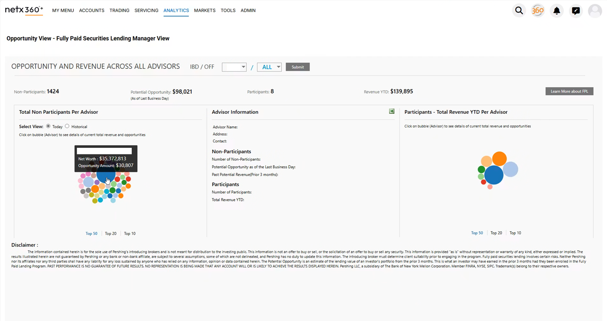
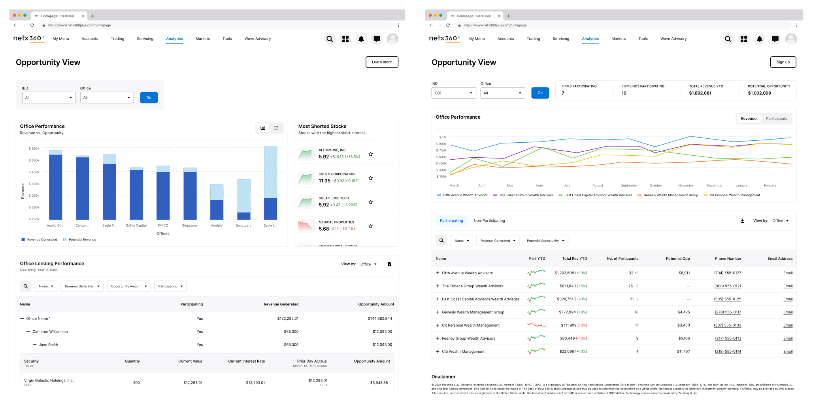
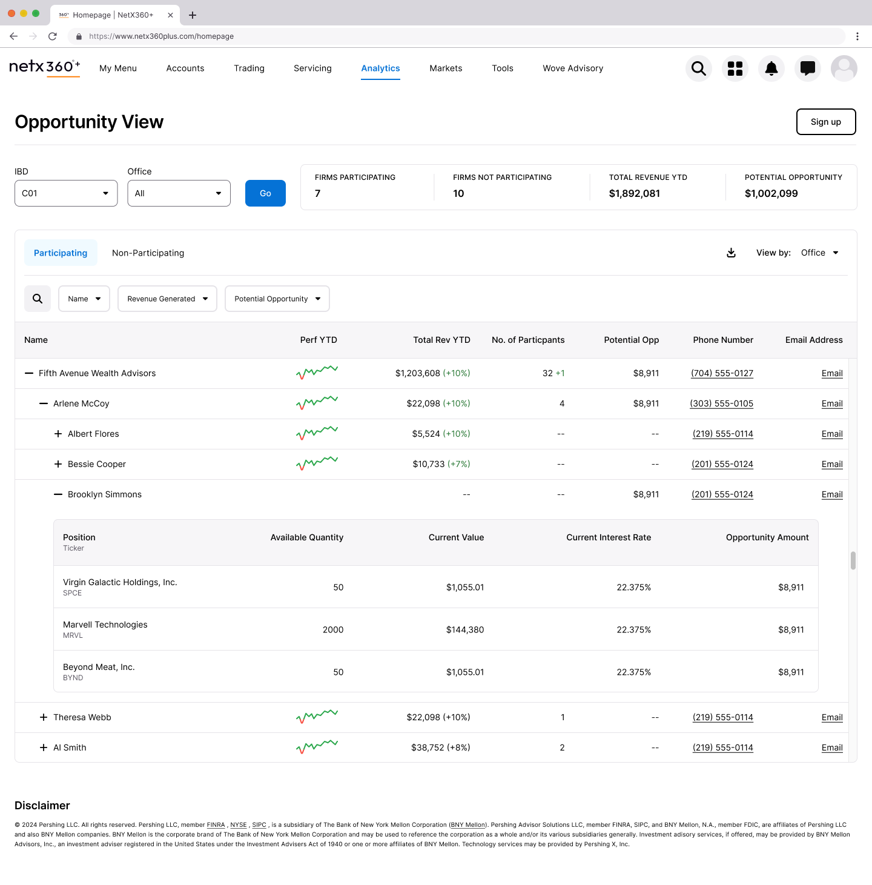
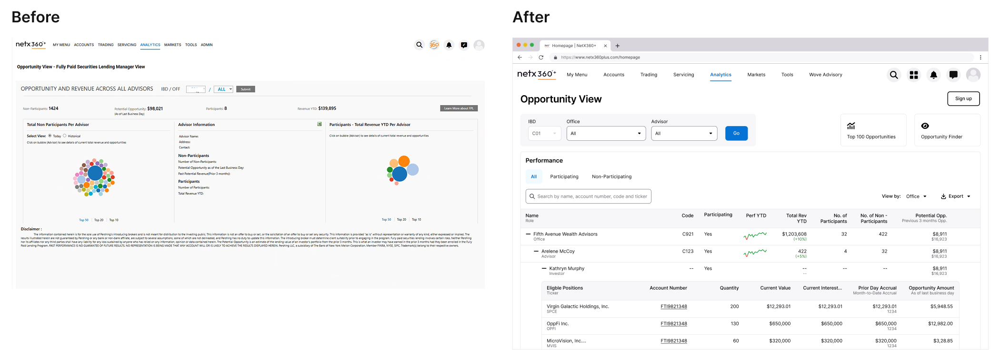
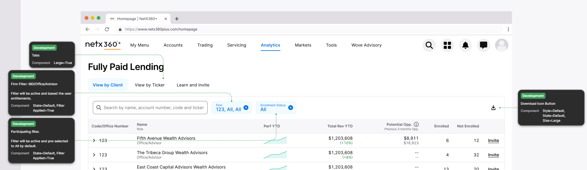
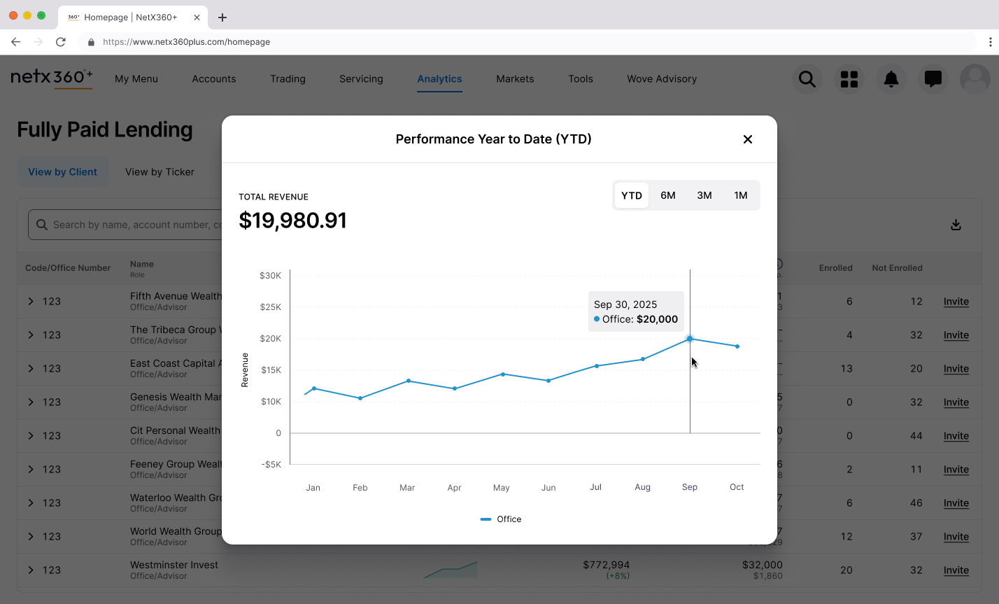
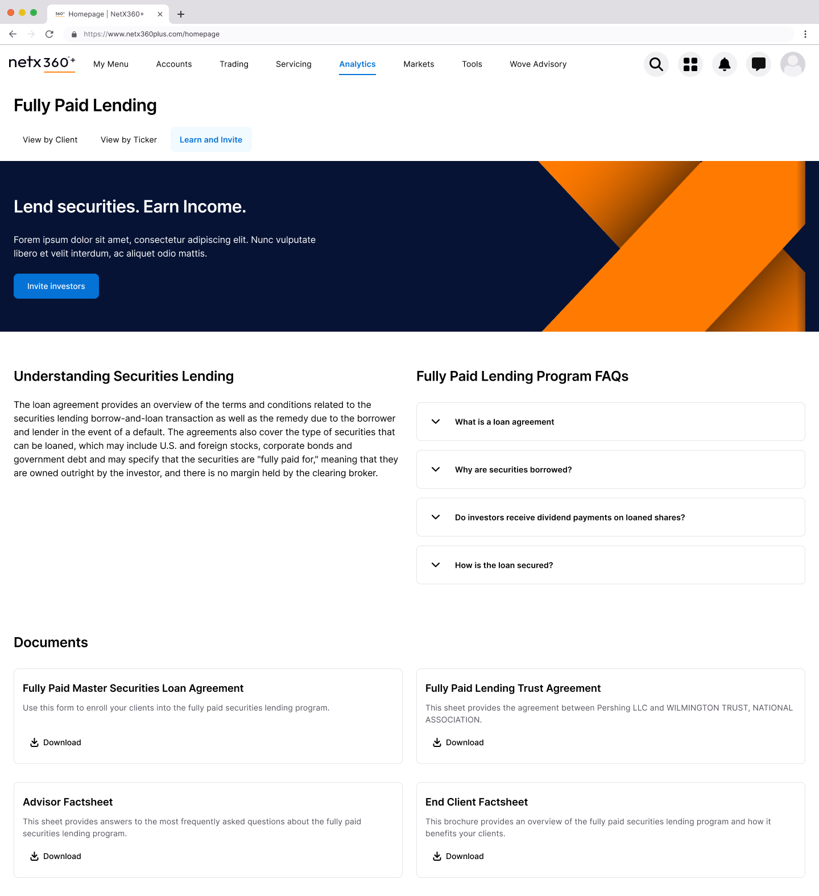
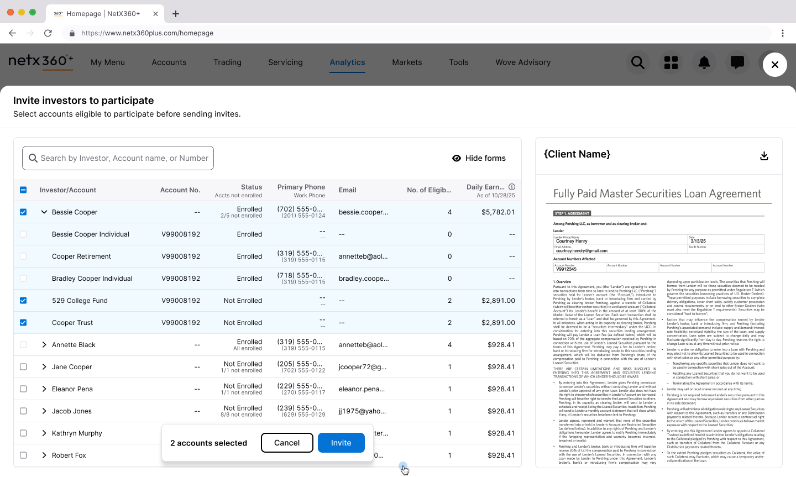
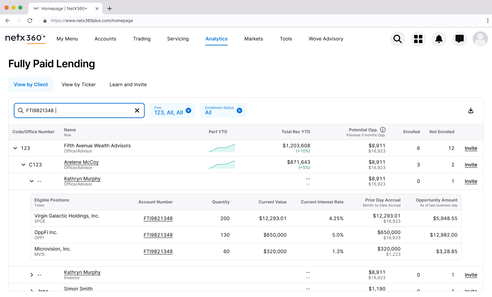
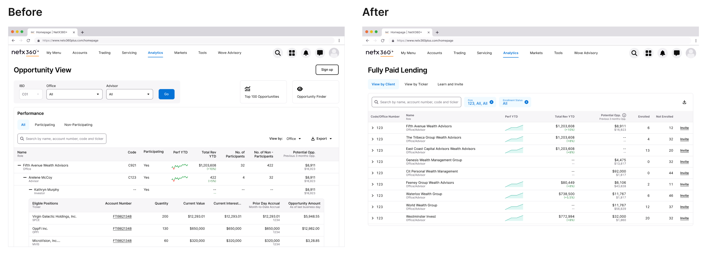

Turning Overlooked Revenue into Action
Fully Paid Lending lets advisors earn fees by lending their clients' shares—but the tool designed to surface these opportunities was collecting dust. I led the redesign of an underutilized NetX360 feature into something advisors would actually use.
| Dimension | Details |
|---|---|
| My Role | Lead Studio Designer |
| Team | Design Lead, Development Lead, 2 Developers, Product SME, Project Lead |
| Timeline | 1 year (kickoff to client release) |
| Outcome | Shipped February 2026 |
The Tool No One Used
Fully Paid Lending is a straightforward value proposition: advisors can lend shares their clients already own and generate passive revenue. BNY Pershing had a tool to help advisors identify these opportunities—but adoption was dismal.
The existing Opportunity View page in NetX360 had all the data. It showed potential revenue, participating clients, and historical performance. On paper, it should have been valuable. In practice, advisors were ignoring it entirely.
"The tool had the data. It just made users work too hard to extract value from it."

Listening to the Workarounds
Without pre-existing insights, I partnered with our research team to understand how advisors were actually engaging with the tool. We conducted research with participants across different roles—from advisors managing individual client relationships to home office managers overseeing entire networks.
The findings were clear: users had developed elaborate workarounds because the interface wasn't meeting their needs.
Research findings summary or affinity map showing key themes
Bubbles Were Decoration
The interface's centerpiece was a bubble visualization—larger bubbles indicated bigger opportunities. The assumption was that visual hierarchy would help advisors prioritize.
Reality was different. Users understood what the bubbles represented, but found drilling into each one inefficient. Most skipped the visualization entirely and exported everything to Excel, where they could sort, filter, and cross-reference with other tools like Bloomberg.
"Some users do not engage with the bubbles at all and rely on Excel exports."

The Data Wasn't Trusted
Advisors needed context the tool didn't provide. They wanted to assess opportunity validity—factors like security utilization and trading frequency—but the interface showed potential revenue without explaining how it was calculated.
Some felt the system assumed static rates that didn't reflect daily market changes. Others questioned whether the numbers were realistic at all. Without transparency, advisors were hesitant to act on what they saw.
Friction Killed Enrollment
Even when advisors identified opportunities worth pursuing, the enrollment process stopped them cold. Onboarding clients into the lending program required manual emails, document uploads, and back-and-forth that created unnecessary friction.
The tool could show you the opportunity. It couldn't help you capture it.
Reframing the Problem
The research painted a clear picture: this wasn't a feature problem. It was a usability problem compounded by a trust problem.
The original interface asked users to interact with data in ways that didn't match their mental models. It prioritized visualization over utility. It obscured methodology instead of revealing it. And it dead-ended at the moment of action.

The core design challenge became:
The Core Question
"How do you surface dense financial data in a way that supports quick scanning and deep investigation—without forcing users into a separate tool?"
From Visualization to Information
The most significant design decision was killing the bubble visualization entirely.
Research showed users were bypassing it for Excel exports. They wanted to scan across offices and advisors quickly, drill into specific positions when needed, and take action without leaving context. Bubbles didn't support any of these behaviors.
I explored multiple directions—bar charts, various table configurations, hybrid approaches—before landing on an expandable nested table as the primary interface.

The Nested Table
The final design uses a three-level hierarchy: Office → Advisor → Investor. Users can scan across the top level to identify high-opportunity offices, expand to see which advisors are driving those numbers, and drill further to individual investor positions.
This pattern solved several problems simultaneously:
- Scanning: Managers can quickly compare performance across their network without clicking into separate views
- Context preservation: Expanding a row keeps surrounding data visible, unlike the old drill-down flow that lost context with each click
- Flexibility: The same structure works for both manager and advisor views, reducing cognitive load when switching between perspectives

Reclaiming the Space Above the Fold
A consistent complaint across BNY Pershing products was content being pushed below the scroll. The legacy FPL page stacked filters, tabs, summary statistics, and navigation elements—leaving actual data buried.
I audited every element above the fold and challenged whether it earned its placement.

What Got Removed
The IBD/Office dropdown filters. These duplicated functionality now handled by the table's expandable hierarchy and inline filtering.
The separate "Top Opportunities" section. Valuable content, but it competed with the primary table. I moved this to a dedicated "View by Ticker" tab where users seeking specific securities could find them intentionally.
The Participating/Non-Participating tab split. Instead of forcing users to toggle between views, I added Enrolled and Not Enrolled columns inline. One view, complete picture.

What Got Added
Sparklines for performance trends. A small inline visualization showing YTD performance lets users spot patterns without leaving the table. Clicking opens a modal with the full chart—progressive disclosure that keeps the primary view scannable.

A "Learn and Invite" tab. Consolidating program information and the enrollment flow in one place addressed the friction that killed adoption. Advisors can understand the program and take action without leaving the tool.

From Insight to Action
Identifying opportunities is only valuable if users can act on them. The legacy enrollment process required manual emails and document uploads—friction that meant opportunities sat untouched.
The invite worksheet lets users select eligible accounts directly from the table and send enrollment forms in a single flow. Status is visible inline (Enrolled, Not Enrolled, partial enrollment states), and users can preview the actual agreement before sending.

The Outcome
The redesigned Fully Paid Lending page shipped to clients in February 2026. While we're still gathering post-launch feedback, every design decision was validated through iterative review with both internal stakeholders and anticipated client needs.
The redesign directly addresses every major pain point from research:
| Research Finding | Design Response |
|---|---|
| Bubble visualization ignored | Replaced with scannable nested table |
| Drill-down lost context | Expandable rows preserve surrounding data |
| Content buried below scroll | Consolidated hierarchy, removed redundant elements |
| Participation status unclear | Inline Enrolled/Not Enrolled columns |
| Top opportunities hard to find | Dedicated "View by Ticker" tab |
| Enrollment friction | Integrated "Learn and Invite" flow |
| Data trust issues | Transparent methodology, progressive disclosure |

Reflection
This project reinforced something I keep relearning: "underutilized" is usually a design problem wearing a feature costume.
The original FPL page had the data. It even had the right idea—help advisors find revenue opportunities. But it presented information in ways that didn't match how users actually worked. They needed tables, not bubbles. They needed inline context, not drill-down journeys. They needed to act, not just observe.
The biggest lever wasn't adding features. It was removing friction and consolidating information so the tool could get out of the way of the work.
